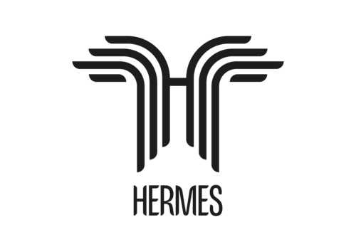

HERMES
The High-frequency Emergency and Rural Multimedia Exchange System provides affordable and easy-to-use digital telecommunications over shortwave/HF radio, allowing for the transmission and reception of data (chat, audio, documents, photos, GPS coordinates, etc). For security, this information can be easily encrypted and password-protected. HERMES, both architecture designs and software, is free and open-source.
Learn more: hermes.radio, GitHub, mailing list, Mercury.